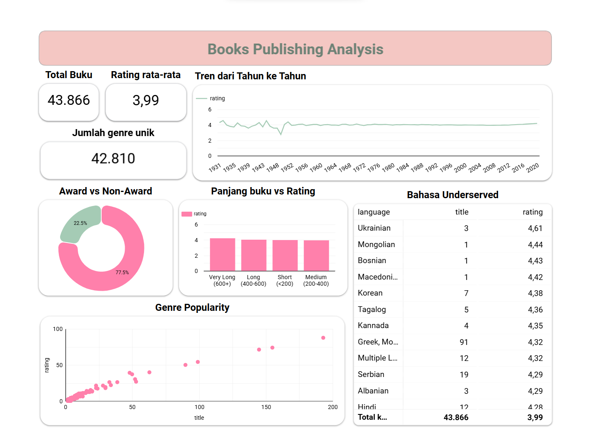
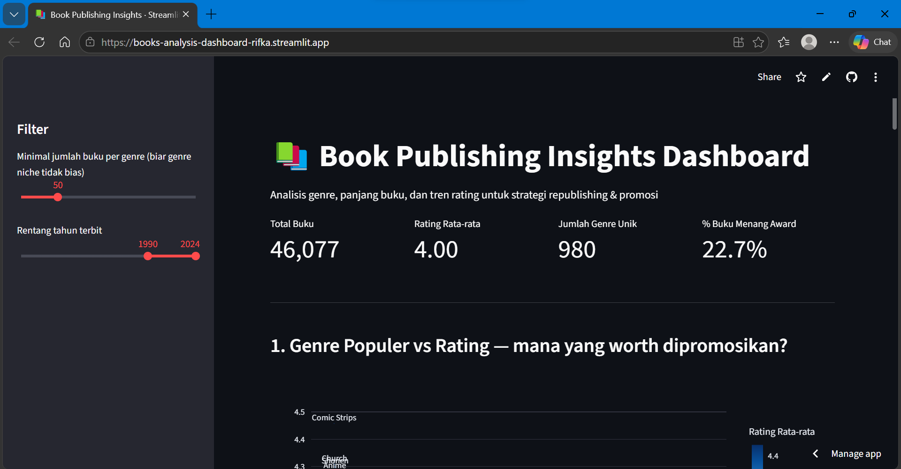

Fresh IT Graduate
Data Analyst · Quality Assurance · System Analyst
I build data analyses grounded in real case studies — from book genre strategy and streaming platform content, to e-commerce data analysis using SQL. I also have hands-on experience as a Quality Assurance intern, and I'm open to QA Analyst & System Analyst roles as well.
Hi! I'm Rifka Umdati, an IT graduate focused on Data Analysis. I build every project around a concrete business question and translate it into an interactive dashboard or SQL query that supports real decision-making. I also have experience in Quality Assurance, with both manual and automation testing skills.
Open to Data Analyst, Quality Assurance, and System Analyst roles.
• Undergoing a project-based internship simulating the role of a Business Intelligence Analyst at Bank Muamalat, applying advanced Excel functions and complex SQL queries to analyze banking business data.
• Queried and processed large-scale datasets using Google BigQuery to support business intelligence analysis and reporting.
• Working towards a final project goal of building an interactive digital user churn dashboard in Looker Studio to visualize churn drivers and support business decision-making.
• Awarded a Rakamin Project Based Internship (PBI) scholarship to participate in this program.
• Relevant coursework: Data Mining, Data Warehousing, Databases, Artificial Intelligence, Expert Systems, Enterprise Resource Planning, Software Quality Testing, Web Programming, IT Project Management.
• Earned an A in Data Mining, with a final project praised by the lecturer and awarded a final-exam exemption.
• Organizations: Deputy Minister of Research and Technology, BEM Faculty of Engineering; Secretary of the Education Division, HMIF
• Routinely organized and validated staple-goods price data within the Diskominfo information system to support accurate public reporting.
• Tested and reviewed the UI/UX of the Kuningan Regency Government's official website, documenting findings for the technical team to act on.
• Built a Google Sheets template for tracking test results and bug reports, streamlining documentation and coordination with the technical team.
• Managed and updated the agency website's content, publishing more than 20 local news articles on a regular basis.
• Coordinated with the technical team on structured identification and reporting of system bugs.
• Coordinated and led the Research and Technology division, keeping all work programs on schedule and on target.
• Monitored and evaluated the execution of work agendas, providing direction to activity leads.
• Prepared periodic evaluation reports and documented the division's activity outcomes.
• Led the planning and execution of the Engineering for Society program from start to finish.
• Coordinated with all stakeholders — schools, speakers, and participants — to ensure a smooth event.
• Successfully ran two training classes (Microsoft Word and Canva) with 50+ participants on each of the first two days.
• Assisted village government administration, including document management and structured resident data archiving.
• Handled hosting and updates for the village profile website, keeping village information accurate and current.
• Uploaded and updated village website articles regularly to support public information transparency.
Data Portfolio
Three data analyst projects — from pure SQL to interactive dashboards deployed live.
Analysis of e-commerce transaction data using pure SQL — multi-table JOINs, window functions (RANK, LAG), CTEs, and customer segmentation by total spending.

Analysis of 52,000+ books from Goodreads to recommend genre and catalog strategy for publishers — popular genres, the effect of page length, rating trends, and underserved language opportunities.

Multi-table analysis (joining titles & credits datasets) for streaming platform content strategy — underserved genres, Movie vs TV Show comparison, production-country efficiency, and cast-level analysis.
Quality Assurance Portfolio
Alongside data analysis, I'm also open to QA Analyst roles — here are my manual & automation testing case studies.
Manual testing of the "Mark as Favorite" feature on the TMDb website, covering user story, requirement, and test scenario design to verify users can mark, access, sort, and remove favorite movies correctly. Followed by regression testing after a site language change (Indonesian → English) to confirm the feature still worked as expected.
This project covered manual testing (Black Box method) and test automation using Katalon Studio for the Linggarjati web application. 45 test cases were developed to validate the app's core functional aspects, most of which were then automated to ensure reliable functionality and efficient repeat testing.
This project focused on manual testing of the Tokopedia application using the User Acceptance Testing (UAT) method — a comprehensive test flow from questionnaire distribution through to app performance analysis.
System Analyst Portfolio
I'm also open to System Analyst roles — here are my system analysis and design case studies.
Conducted system requirements analysis, application process design, and requirement documentation for the application.
Designed and developed a web-based University Academic Information System using the Prototyping method so development stayed aligned with user needs. The system covers integrated academic data management for students, lecturers, courses, schedules, and grades.
Wrote a Software Requirements Specification (SRS) document for the Camera Rental System (RECAM) as a reference for system development. The document covers functional and non-functional requirements analysis, plus system modeling using Context Diagrams, Data Flow Diagrams (DFD), Entity Relationship Diagrams (ERD), and Use Case Diagrams.